The Persistence of Memory
An immersive exhibition that explores the seven sins of memory through surreal, interactive spaces.
View full processExhibition concept
This exhibition is made for a wide range of visitors—students, teachers, families, and anyone curious about memory, art, and human psychology. By using surreal scenes and interactive designs, it makes complex psychological ideas easy to understand, interesting, and fun for all ages. Visitors can explore the mysteries and limits of their own memories through art, imagination, and playful experiences. In short, this exhibit helps people learn about themselves in an engaging and memorable way.
Exhibition booklet
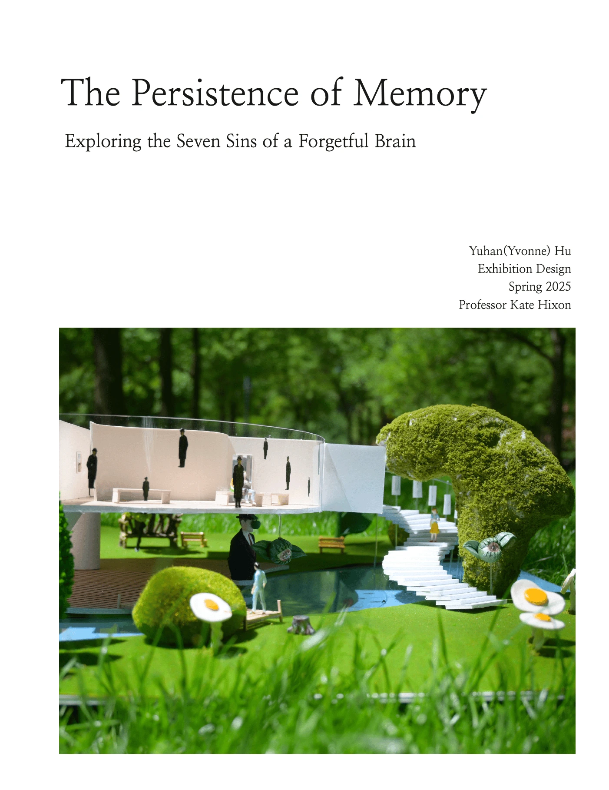
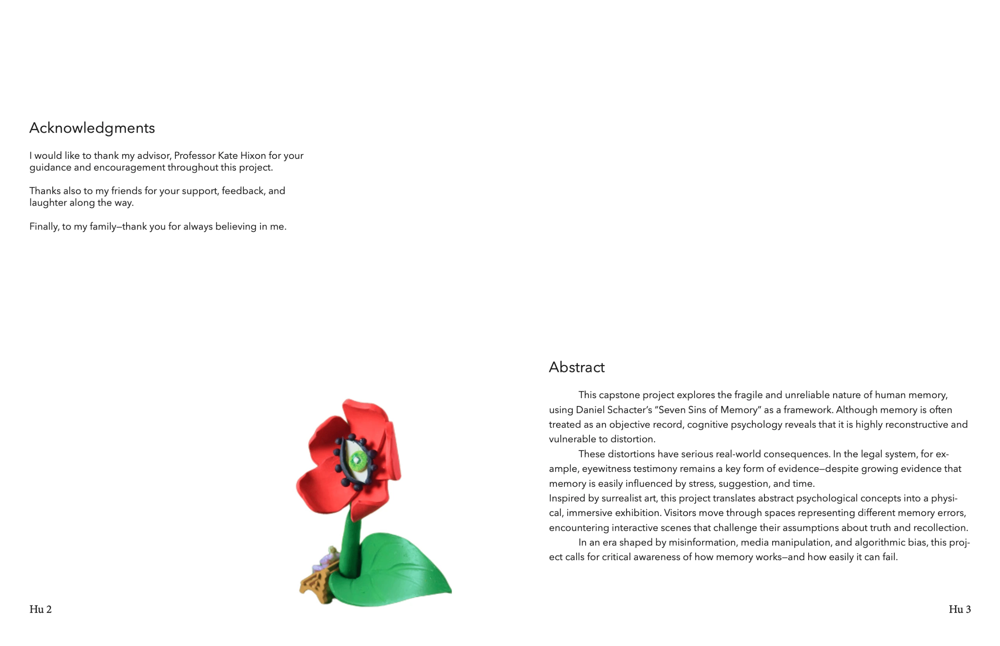
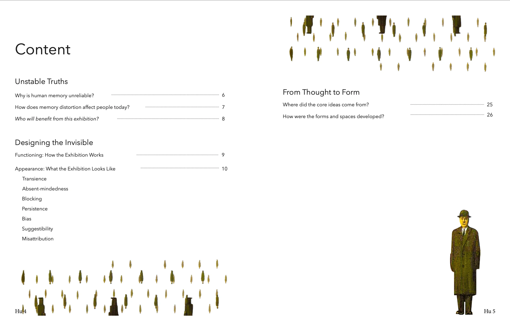
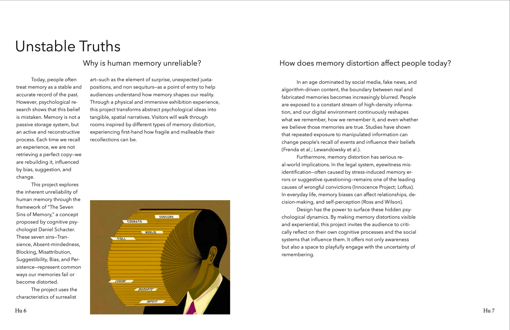
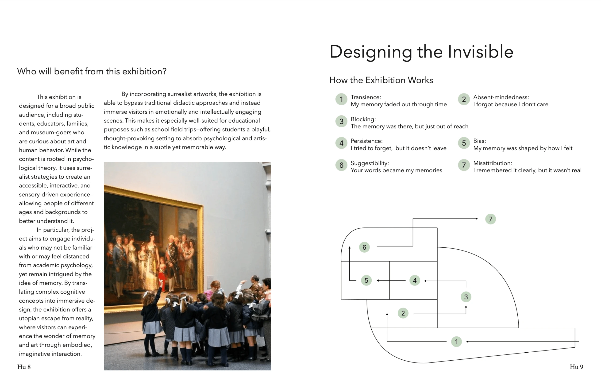
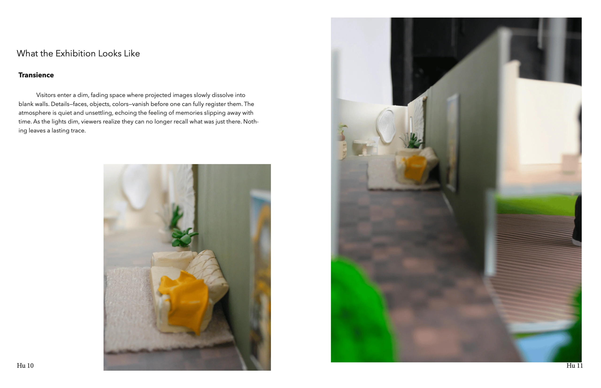
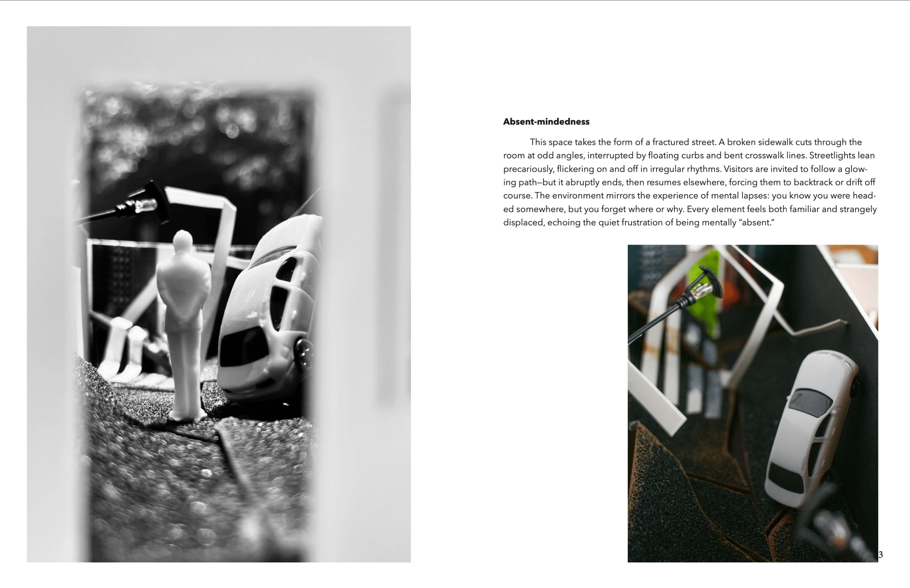
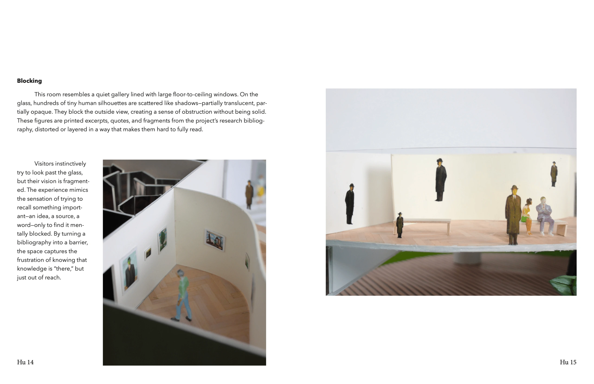
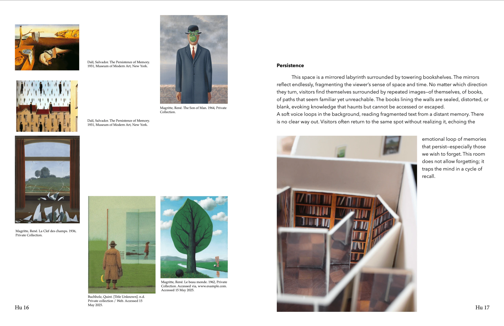
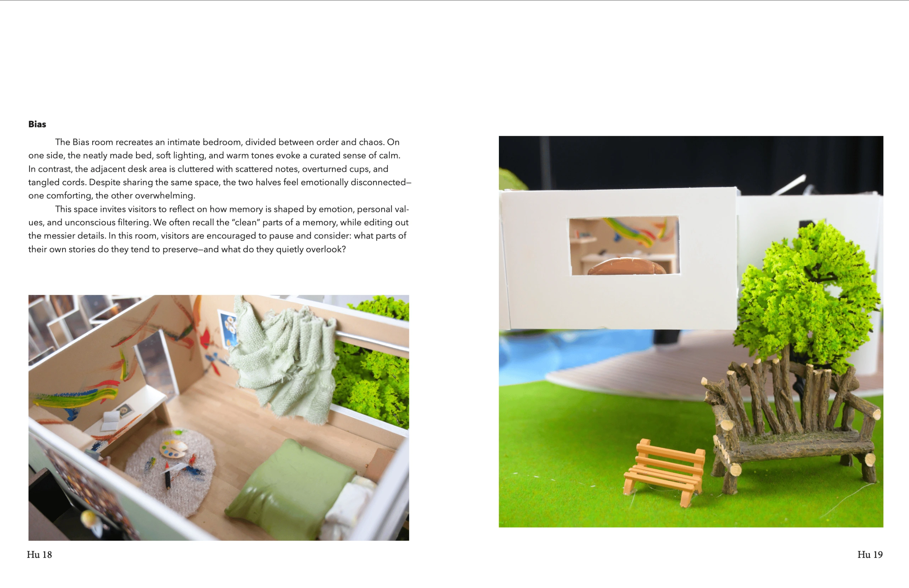
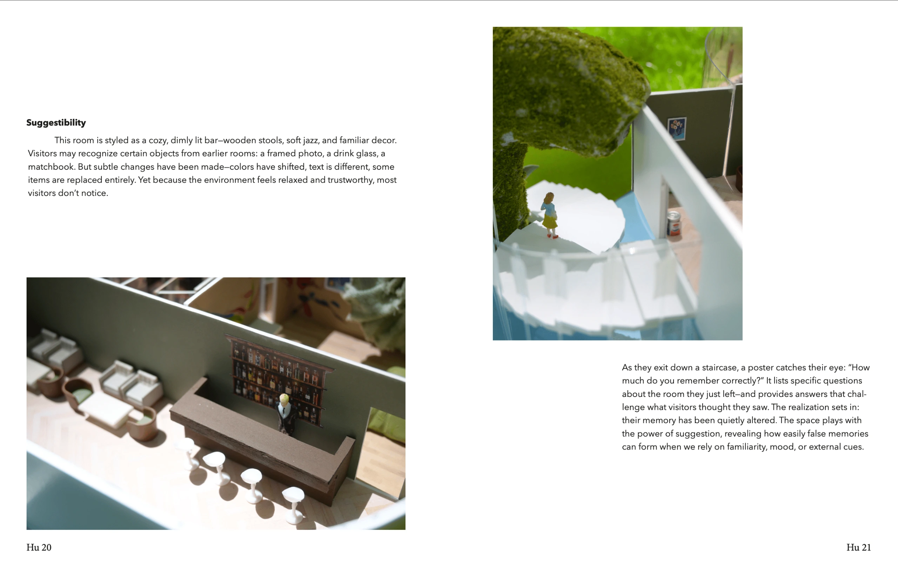
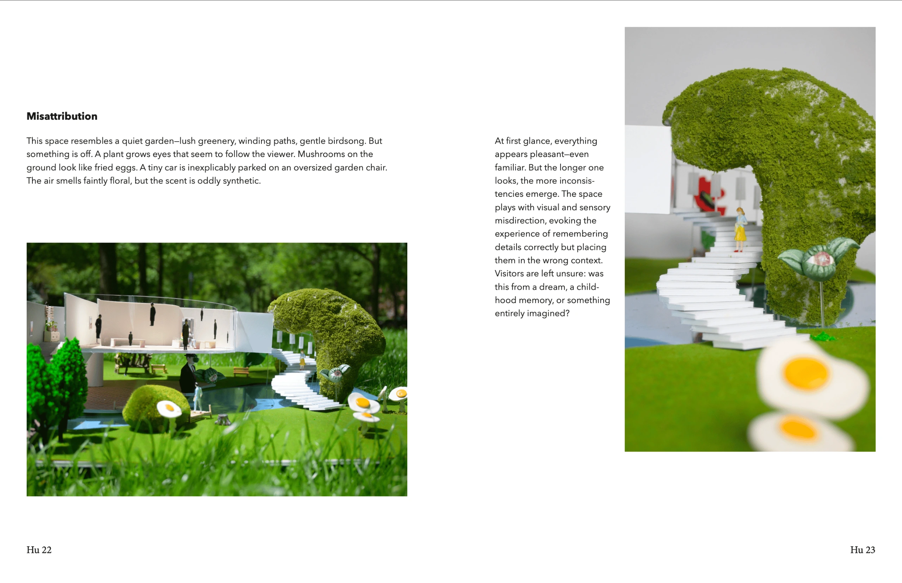
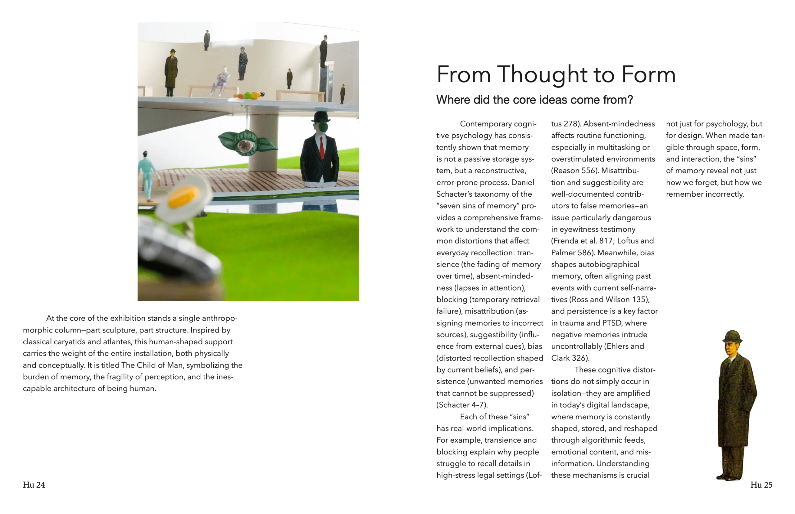
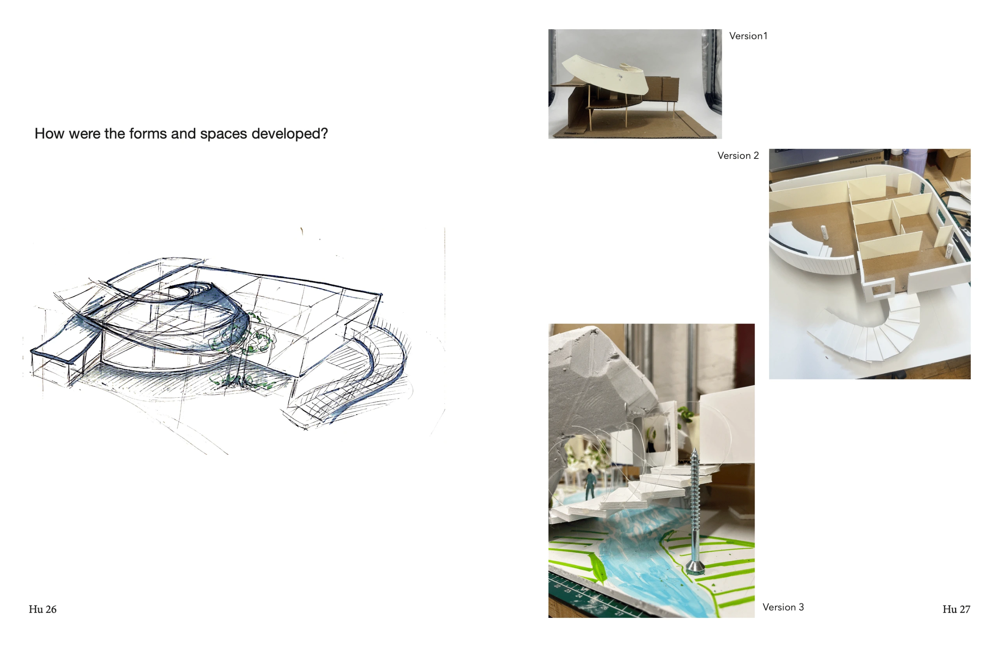
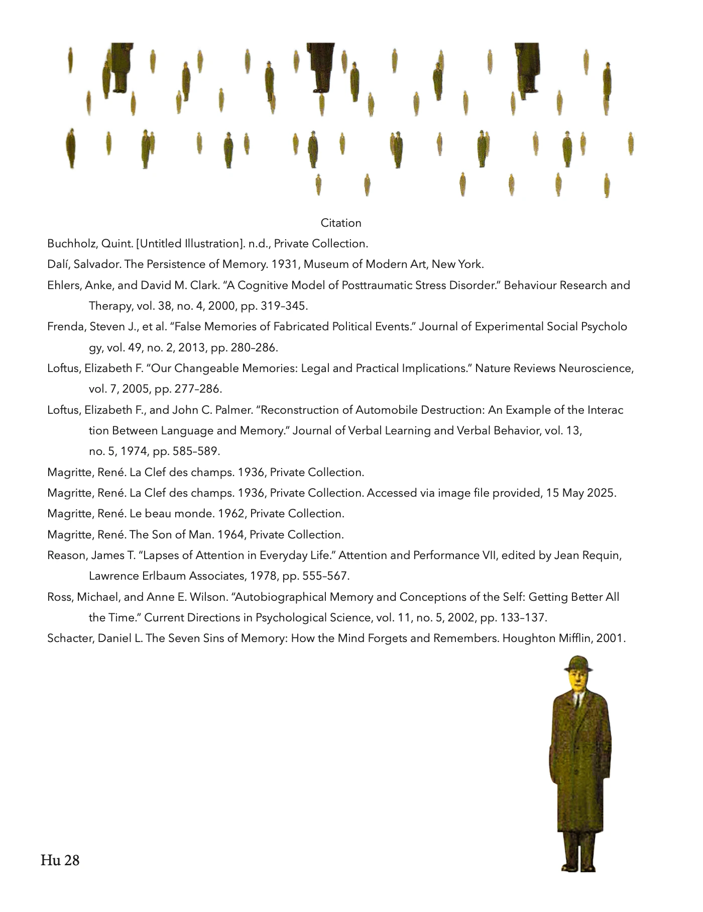